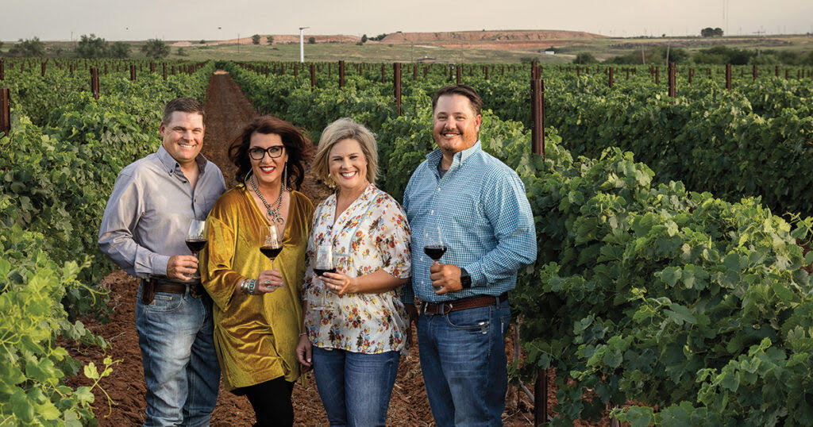
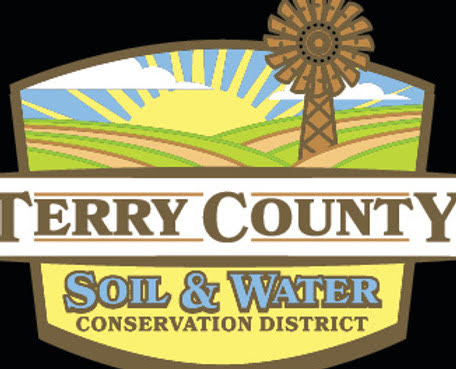
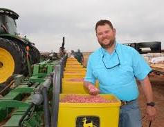
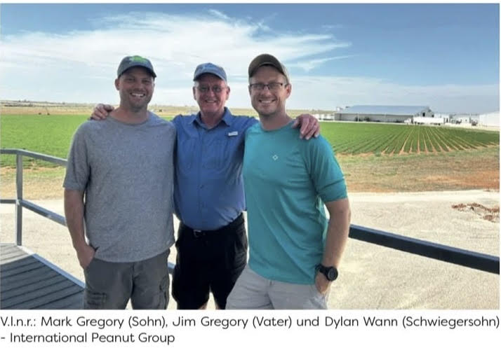
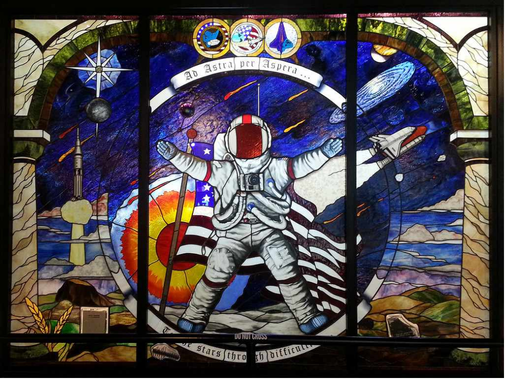

.jpeg)
.png)
.png)
.png)
Day by Day
Full Schedules, Hosts, and Notes
August 23rd
Sunday
| 6:30 PM | Welcome Gathering, Midnight Shift at Cotton Court Valencia Hotel (Casual, Dutch treat. Come meet the group.) · map |
Casual dress — a fun evening to connect before the tour begins. Links to NASA biographies and host biographies.
August 24th
Monday
Be sure to eat breakfast at your hotel this morning! Dress for a working farm: closed-toe shoes, long pants, and a hat. We will be outdoors on uneven ground in August heat (temperatures in mid-to-upper 90s). Bring water and sunscreen.
| 8:00 AM | Bus departs Cotton Court Hotel. Breakfast on your own · map
Guests at the DoubleTree and MCM Elegante, please plan to be at the Cotton Court by 7:50 AM.
|
||||||||||||||||||||||
| 8:50–11:00 AM | Bingham Family Farms & Vineyards at 645 FM-303, Meadow, TX 79345 · map | ||||||||||||||||||||||
| 11:30 AM–2:15 PM | Lunch and presentations at The Armory, Brownfield (101 Webb St, Brownfield, TX 79316). Program ends 2:00. Bus departs 2:15 · map
Lunch Presentations & Speaker Schedule
|
||||||||||||||||||||||
| 2:30–4:30 PM | Peanuts and Processing Tour, International Peanut Group (IPG) at 1995 County Rd 290, Brownfield, TX 79316 · map | ||||||||||||||||||||||
| ~5:20 PM | Return to hotels | ||||||||||||||||||||||
| 6:30–8:30 PM | Individual cars to dinner at Escondido Grill — 701 Regis St, Lubbock, TX 79403 (sponsored by Cotton, Inc. and NDrip — seating is limited) · map |
"Through a troublesome combination of necessity and inclination, the farmer who evolved on the Plains developed a healthy propensity for innovation. He learned to accept change or he failed. He extolled the doctrine of unending progress and as a matter of practicality kept one eye on his neighbor's crop and cultivation practices and adopted those which proved promising."— Richard Mason
.jpeg)
.jpeg)
.jpeg)
.jpeg)
.jpeg)
.jpeg)


August 25th
Tuesday
Locations for the day: Kress, Lubbock, Lamesa, and Slaton. Breakfast on your own prior to departure. Dress for a working farm: closed-toe shoes, long pants, and a hat. Bring water and sunscreen.
| 8:00 AM | Meet the bus at the Cotton Court Hotel; leave for Barry Evans
Farm in Kress, TX · map
Guests at the DoubleTree and MCM Elegante, please plan to be at the Cotton Court by 7:50 AM.
|
| 9:00–11:00 AM | Visit Barry Evans Farm at 7187 FM 145, Kress, TX 79052 — hosts: The Sorghum Board and Barry Evans. Background: the dwindling Ogallala Aquifer (Texas Monthly) · map |
| 11:00 AM | Leave for TAMU AgriLife Research & Extension Center, Lubbock · map |
| 12:00–2:00 PM | TAMU AgriLife Research & Extension Center at 1102 E Farm to Market Rd 1294, Lubbock, TX 79403 — lunch, presentations, a tour, and a short and informal NASA presentation · map |
| 2:00 PM | Leave for farm tours |
| 3:00–4:15 PM | Broadview Agriculture tour with Jeremy Brown at 502 County Road L, Lamesa, TX 79331 · map |
| 4:15–5:00 PM | Travel via bus to Vardeman Farms |
| 5:00–8:00 PM | Tour Vardeman Farms at 3520 E Woodrow Road, Slaton, TX 79364 and roundtable dinner with local farmers at the home of Dean and Lacy Vardeman · map |
.jpeg)
.jpeg)
.jpeg)
.jpeg)
.jpeg)
.jpeg)
Texas Agriculture Facts
Key Statistics
Sources: Texas Department of Agriculture · Go Texan Program · Texas Farm Bureau
.jpeg)
.jpeg)
.jpeg)
.jpeg)
.jpeg)
.jpeg)


August 26th
Wednesday
Breakfast burritos and coffee will be provided at FBRI.
| 8:00 AM | Check out — depart by 8:15 AM in individual vehicles for TTU Fiber and Biopolymer Research Institute · map |
| 8:30–10:30 AM | TTU Fiber and Biopolymer Research Institute for discussion on translation of research to practice. See cotton from seed to fiber. 1001 E Texas 289 Loop Frontage, Lubbock, TX 79403. Collaboration in Cotton. · map |
| 11:00 AM | Drive northeast into Oklahoma toward Bergen Farms, Sulphur, OK · map |
| 4:00–6:00 PM | Bergen Ranch — guided tour. Meet at the farm gate to board the chartered bus for a tour of the 12,000-acre regenerative ranch, including the wind farm and the pasture and rangeland work behind the 3M project with researchers from the Noble Institute. · map |
| 6:00–8:30 PM | Dinner and roundtable at Bergen Ranch. Joined by representatives of Oklahoma's federal delegation, the National Weather Center, lead researchers from Oklahoma State University, senior NRCS leadership, and industry leaders including the president of the company operating the ranch's wind farm. The discussion is built around a single objective: building lasting working relationships between the NASA Acres system and the people who will use it. |
| 8:30 PM | Depart for The Artesian Hotel, Sulphur, OK · map |
.jpeg)
.jpeg)
.jpeg)
.jpeg)
.jpeg)
.jpeg)
Project Overview
Metrics, Management and Monitoring
An investigation of pasture and rangeland soil health and its drivers. While most soil health initiatives are focused on cropland, they fail to address the hundreds of millions of acres of degrading pasture and rangeland.
There are 655 million acres of pasture and rangeland in the continental United States. This is 41 percent of the land usage in the continental United States, making it the single largest use of land in the nation.
Total project cost: More than $19M · FFAR: $9,000,000 · Noble Research Institute: $7,500,000 · Additional funding: Greenacres, Elton Family Foundation, ButcherBox
August 27th
Thursday
| 8:00 AM | Leave Sulphur, OK for Alva. Kent Martin is coming down to Sulphur to bring the group north himself. Breakfast and lunch on the road. |
| 1:30 PM | Arrive in Alva, OK. |
| 2:00–3:30 PM | Presentations and Q&A. with Dr. Karen St. Germain and Dr. Alyssa Whitcraft at Northwestern Oklahoma State University. Open discussion after. |
| 3:30 PM | Farm tour and research farm north of Dacoma, OK. Area farmers and the NASA team on the ground together, looking at the same fields. |
| 6:00 PM | Dinner — Alva Brewing Company, 327 Barnes Ave, Alva, OK 73717 |
| 8:00 PM | Travel from Alva, OK to Hutchinson, KS. Overnight at the Hilton Garden Inn, 1715 N Waldron Street, Hutchinson, Kansas 67502. |
Hosts: Kent Martin and NWOSU
.jpeg)
.jpeg)
Oklahoma Agriculture
- Oklahoma had a 10.4% decrease in total number of farms, from 78,531 in 2017 to 70,378 in 2022.
- Total land in farms also had a 3.7% decrease in 2022, from 34.2 million to 32.9 million acres.
The Cost of Cedar Encroachment in Oklahoma
- Lost grass production: 9 billion lbs
- Round bales lost: 7.5 million
- Lost forage value: $375 million
- Feed capacity lost: 728,000 cows / 3.2 million steers
- Total negative economic impact: $2.6 billion
- Water draw: a single cedar tree draws 30+ gallons/day; dense stands draw 60,000+ gallons/acre/year
- Wildfire danger significantly increased
Links: OACD.org · OCC Website
.jpeg)
.jpeg)
August 28th
Friday
| 8:00 AM | Load bus at the Hilton Garden Inn in Hutchinson |
| 8:10 AM | Depart for Flickner Innovation Farm · map |
| 8:45 AM | Field tour west of Moundridge — tech demo, combine rides, soil pit, and more |
| 11:30 AM | Depart for the Hilton Garden Inn |
| 12:10 PM | Return to the Hilton Garden Inn |
| 12:30 PM | Lunch and Learn at the Kansas Cosmosphere — lunch, poster presentations, and time to explore the facilities · map |
| 3:00 PM | Event concludes |
| Departure | Leave for airport as needed — Dwight D. Eisenhower Airport in Wichita is a 1 hr drive from Hutchinson. Safe travels! · map |
.jpeg)
.jpeg)
